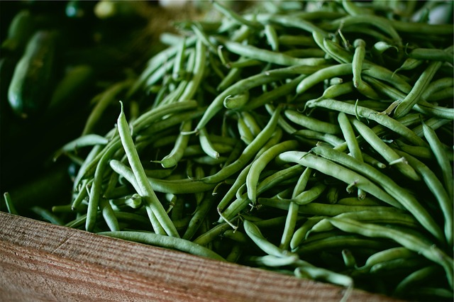
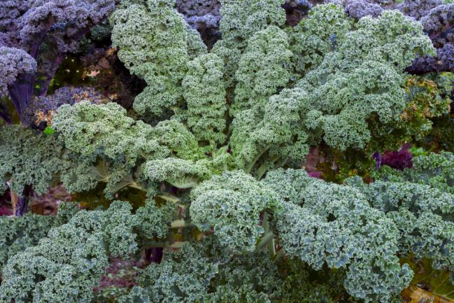
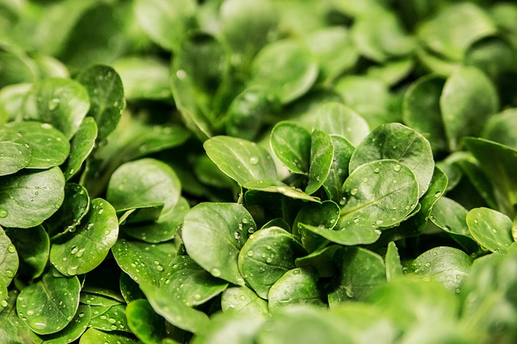

Une saison, un légume.
Qui n'a jamais rêvé de pouvoir manger ses propres légumes du jardin ? Ici, vous pourrez trouver les légumes les plus faciles à faire pousser dans votre jardin pour chaque saison.
Au printemps...

Les haricots verts
Les haricots verts sont réellement simples et pratiques à faire pousser. Ces légumes gain de place poussent en hauteur et grimpent. Comment les réussir ?- Installez-les près d’un mur.
- Fabriquez un treillis sur lequel ils vont venir s’enrouler.
- Placez-les au soleil dans une terre azotée et associez-les avec des choux ou des céleris.
Le haricot vert est une légumineuse considéré, par ses qualités nutritionnelles, comme un légume frais.
Vous pourrez les planter durant les mois de mars-avril et commencer à les déguster en juin !
En été...
Les poivrons
Ce légume est la star de l’été.Il s’acclimate très bien dans un tout petit potager, car il ne nécessite que très peu d’espace.
Choisissez un emplacement chaud et ensoleillé et installez-le dans une terre bien drainée à laquelle vous allez ajouter un peu d’engrais au moment de la plantation.
Vous pouvez également le faire pousser en pot si vous le souhaitez.
Plantez le durant le mois de mai et, à partir du mois de juillet, vous profiterez d’une récolte conséquente.
En automne...

Le chou kale ou chou frisé
Cette ancienne variété de chou est l’une des préférées des grands chefs et des stars américaines.Ses feuilles à la forme originale et ses vertus nutritionnelles le rendent incontournable.
Il s’accommode très bien dans de petits espaces à condition de respecter certaines règles :
- Il ne faut pas l’exposer à trop de chaleur. Il préfère rester au frais.
- Il doit être planté au soleil ou éventuellement à la mi-ombre.
- Il n’a pas besoin d’engrais.
Plantez vos choux entre mai et juin. Après quelques mois de maturation, vous pourrez récolter vos choux de septembre à décembre !
Et pour l'hiver...
La mâche
La mâche est une salade de culture facile, qui réclame peu d’espace et accessible à tous, même si vous avez un balcon ou une terrasse.On l’apprécie pour sa douceur et sa saveur si agréable, légèrement sucrée et délicatement aromatique.
D’une manière générale, la mâche aime les sols humifères, frais, légèrement plombés en surface, mais elle poussera également dans les terres légères si elles sont suffisamment fraiches.
Elle se plait en situation ombragée ou même ensoleillée mais attention, elle redoute les excès de chaleur et d’humidité.
Cette mini-salade d’hiver se sème dès la fin de l’été et se récolte à partir de l’automne jusqu’au printemps !
